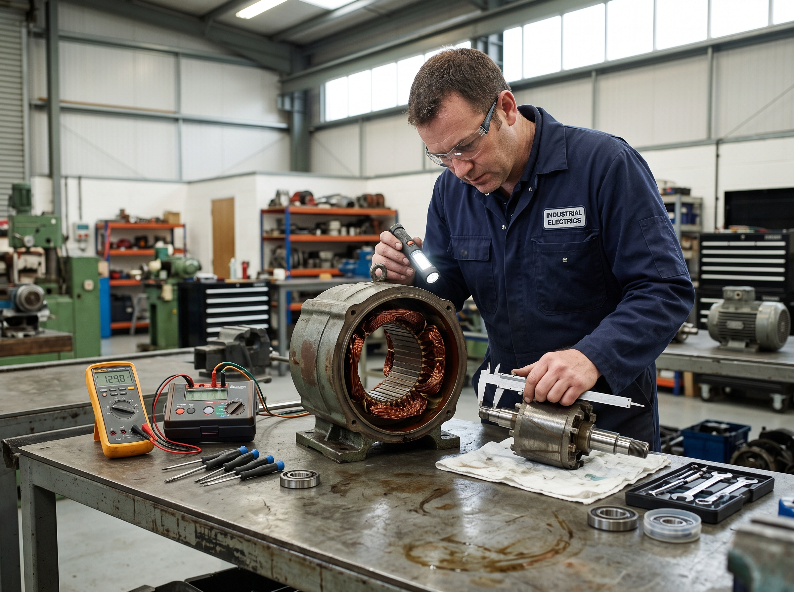
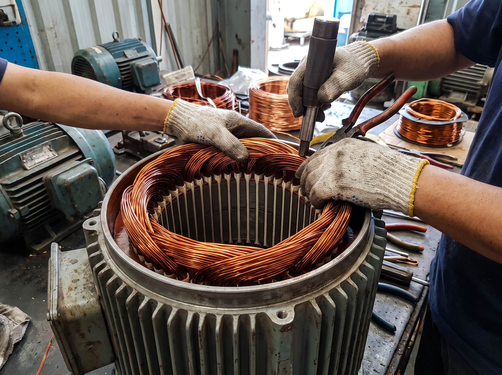
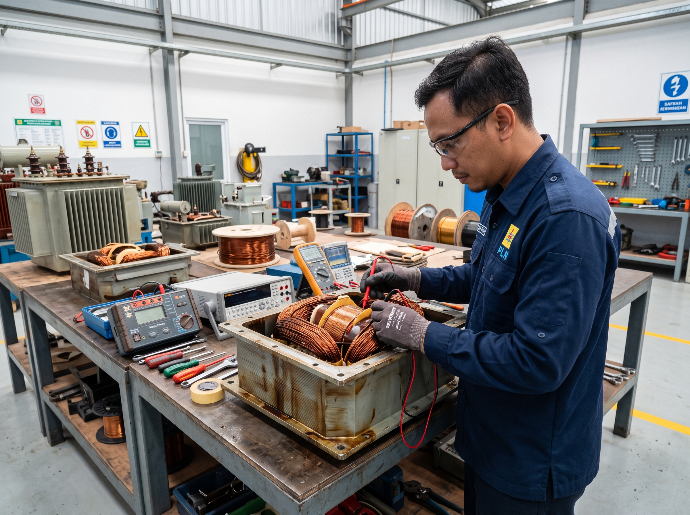
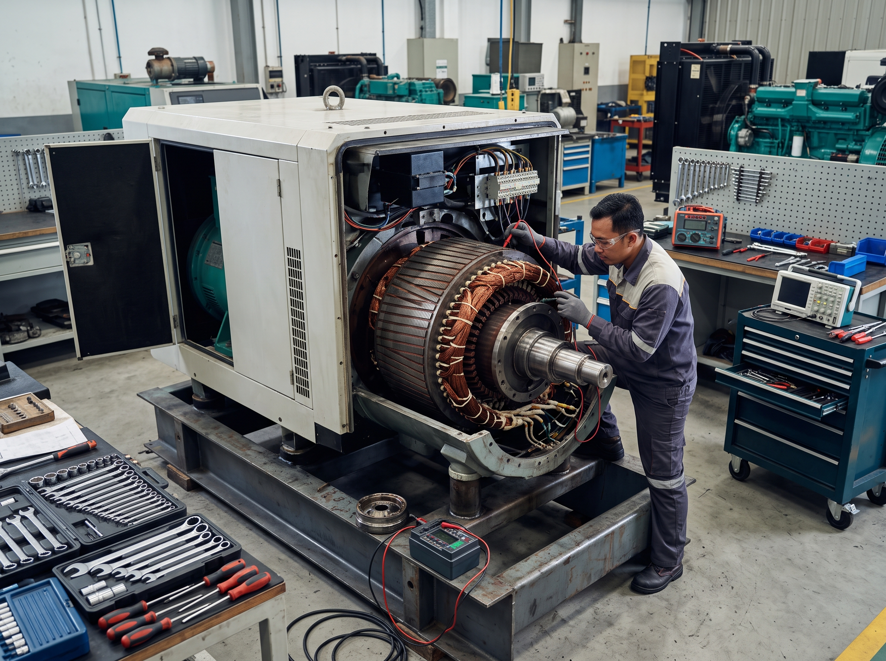
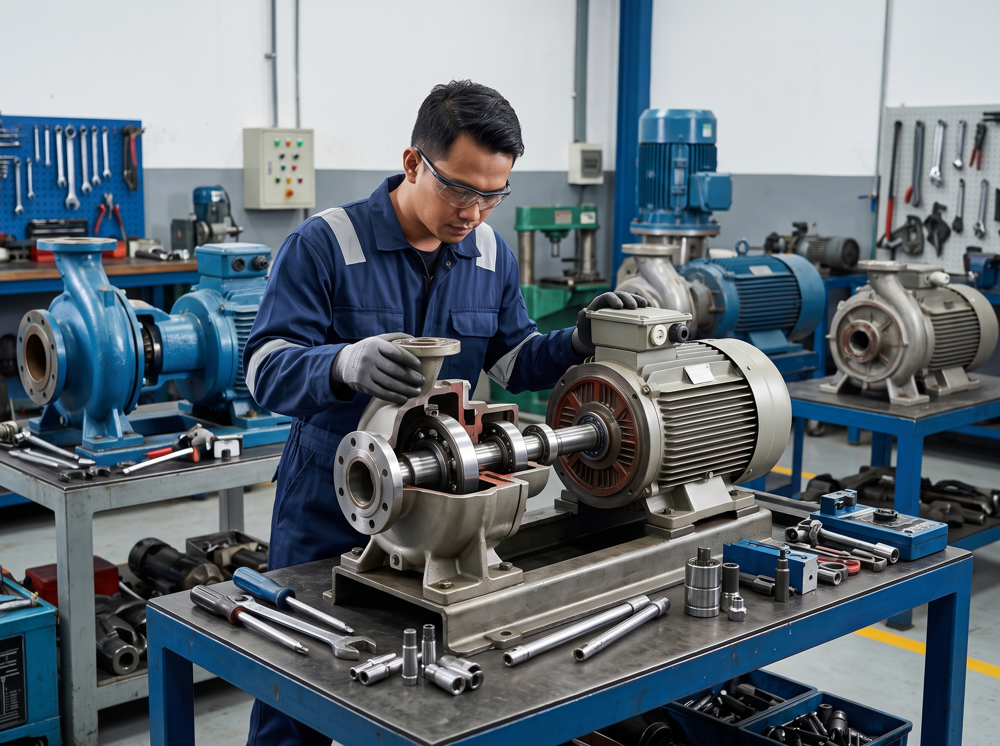
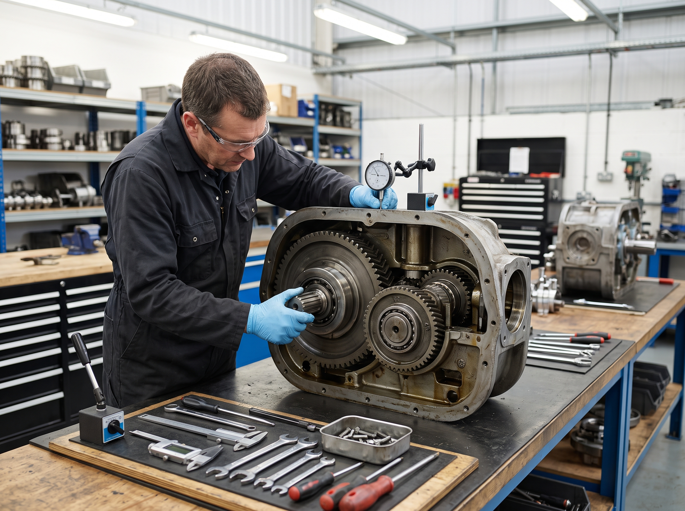
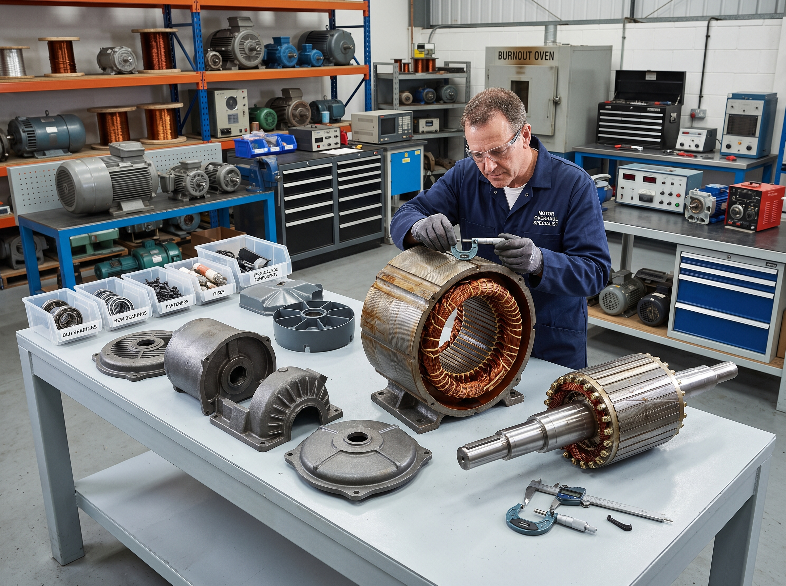
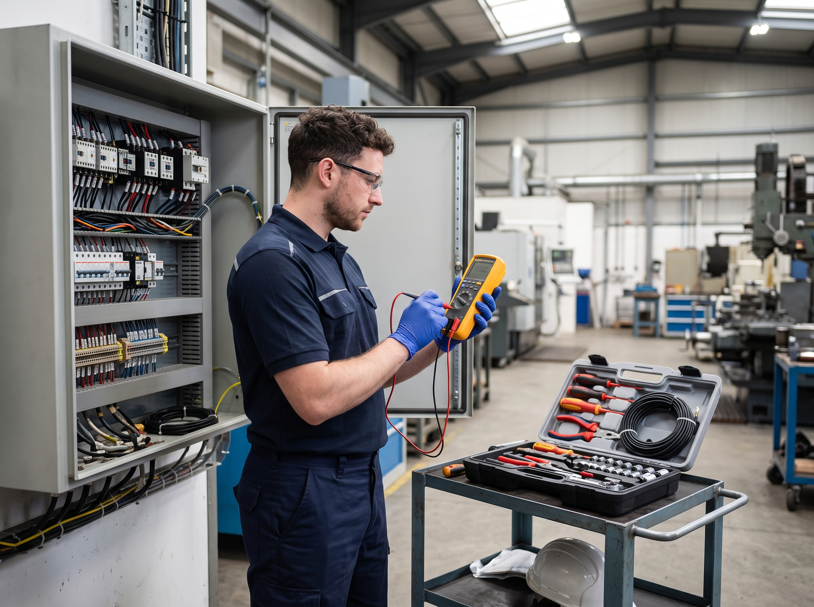

Fatan Tehnik Elektro menyediakan layanan lengkap service, rewinding, repair dan maintenance perangkat electrical & mechanical.

Kami melayani perbaikan dan perawatan berbagai jenis dinamo, dari dinamo kecil rumah tangga hingga dinamo industri kapasitas besar. Setiap dinamo dianalisa terlebih dahulu untuk menentukan jenis kerusakan sebelum dilakukan perbaikan.
Penanganan service dan rewinding motor listrik AC dan DC berbagai kapasitas. Kami menangani motor 1 phase maupun 3 phase dengan pengalaman menangani berbagai merk dan tipe motor industri.


Layanan service, repair dan rewinding transformer / trafo berbagai kapasitas. Penanganan trafo step-up, step-down, trafo distribusi, dan trafo industri dengan pengecekan menggunakan alat ukur yang tepat.
Perbaikan dan maintenance generator / genset untuk memastikan keandalan sistem pembangkit listrik cadangan Anda. Kami menangani generator dari berbagai merk dan kapasitas.


Layanan service motor pompa air centrifugal, submersible, pompa industri, dan pompa pertanian. Kami menangani kerusakan motor pompa, masalah kapasitor, serta penggantian komponen yang aus.
Repair dan maintenance gearbox industri untuk menjaga performa transmisi mesin Anda. Kami menangani kerusakan gear, bearing, seal, serta masalah pelumasan pada berbagai jenis gearbox.


Layanan service dan perbaikan blower industri, kipas centrifugal, dan exhaust fan. Kami menangani kerusakan motor blower, permasalahan blade, balancing, serta perawatan rutin.
Layanan troubleshooting, perbaikan dan maintenance electrical pada berbagai jenis mesin. Kami membantu mengidentifikasi dan menyelesaikan permasalahan electrical secara efisien.

Konsultasikan kondisi mesin Anda dengan kami. Kirim foto atau video kerusakan via WhatsApp dan kami akan bantu menentukan solusi terbaik.